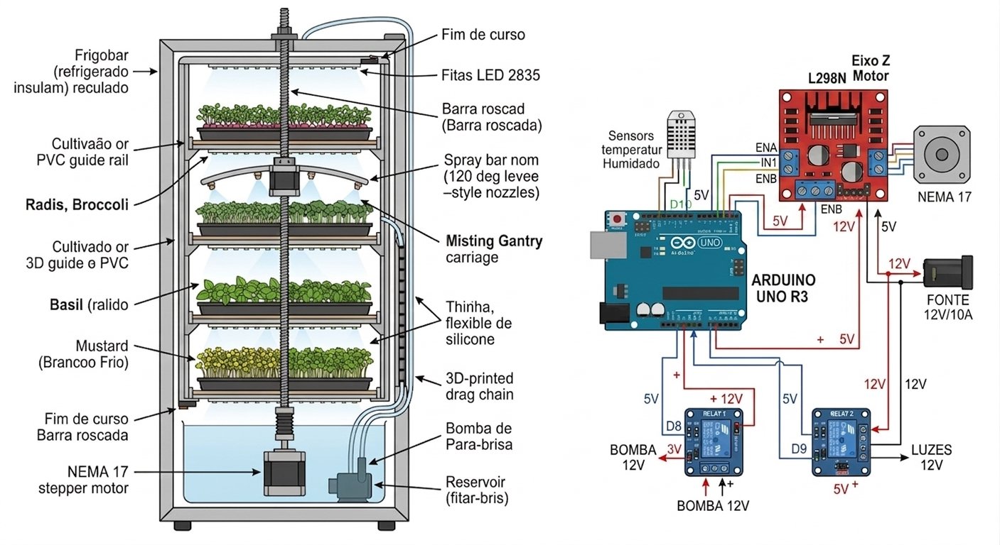
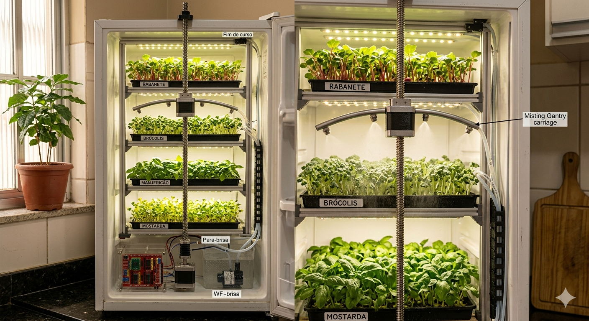
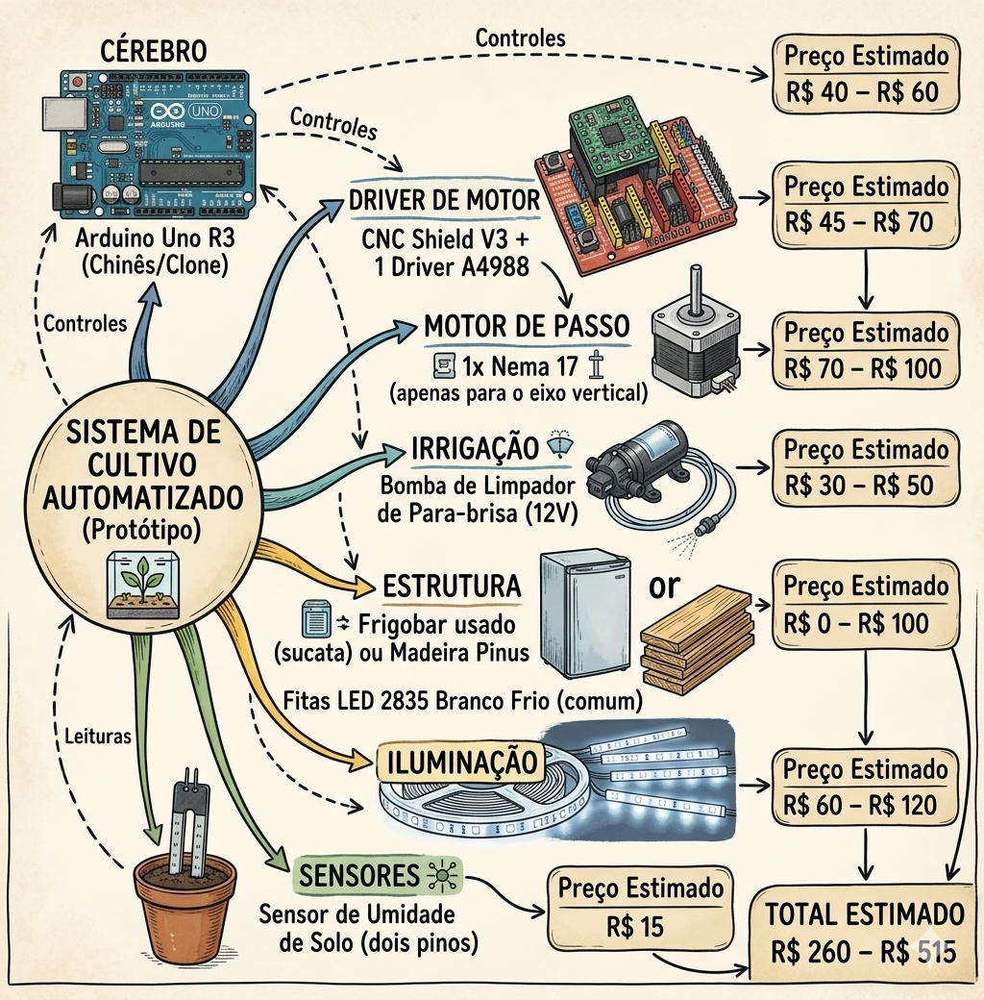

Bem vindo ao cultivador de MicroVerdes 0.1
O projeto inicial é este!

Como ele funciona
O Cérebro em Ação (Arduino + CNC Shield)
O Arduino é quem manda em tudo.
Ele possui um cronômetro interno (ou sensor) que decide quando é hora de ligar a luz ou regar.
O CNC Shield acoplado a ele serve especificamente para controlar o movimento preciso do motor.
O Ciclo de Luz (Fitas LED)
As fitas LED 2835 fornecem a "energia" para as plantas.
Através de um Relé (que funciona como um interruptor automático), o Arduino liga as luzes por um período determinado
(ex: 12 a 16 horas por dia) e as desliga para o descanso das plantas.
O Sistema de Rega Inteligente (Eixo Z)
O Movimento: Em vez de ter uma bomba para cada bandeja, o Motor NEMA 17 gira a Barra Roscada.
Isso faz com que a "Treliça de Nebulização" (o cano com bicos) suba ou desça até a bandeja que precisa de água.
Segurança: Os sensores de Fim de Curso avisam ao Arduino que a treliça chegou no topo ou na base, evitando que o motor force a estrutura.
A Irrigação (Bomba de 12V)
Quando a treliça está na altura certa da bandeja, o Arduino aciona o segundo Relé, que liga a Bomba de Água.
A água sai do reservatório, sobe pelo tubo de silicone e é borrifada pelos bicos de 120° diretamente sobre as plantas.
Controle de Clima (DHT22 + Ventilador)
O sensor DHT22 fica lendo a temperatura e a umidade.
Se ficar muito quente lá dentro por causa dos LEDs, o Arduino liga o Ventilador de Circulação para trocar o ar.
Isso evita que apareçam fungos ou que as plantinhas "cozinhem" no calor.
Em resumo, o fluxo é:
Monitorar: O sensor checa o clima.
Iluminar: Os LEDs garantem a fotossíntese.
Posicionar: O motor move o braço de rega até a prateleira.
Regar: A bomba dispara o spray de água.
Repetir: O sistema volta para a posição inicial e aguarda o próximo ciclo.
Como esperamos que ficará!

Aqui está os materiais que utilizaremos!

Listinha completa
⚙️ Componentes de Controle e Movimentação
01x CNC Shield: Placa de interface para controlar os motores através de um microcontrolador (como o Arduino).
01x Motor de Passo: Responsável pelo movimento preciso e controlado do sistema.
01x Fuso Roscado: Eixo mecânico que converte o giro do motor em deslocamento vertical ou horizontal.
💧 Sistema de Irrigação e Estrutura
01x Misting Gantry: Estrutura móvel (pórtico) equipada com bicos para a pulverização das plantas.
02x Bombas de Para-brisa: Utilizadas para bombear
a água do reservatório até os bicos com a pressão necessária.
04 Metros de Tubulação Flexível: Mangueiras para a condução do fluido por todo o sistema.